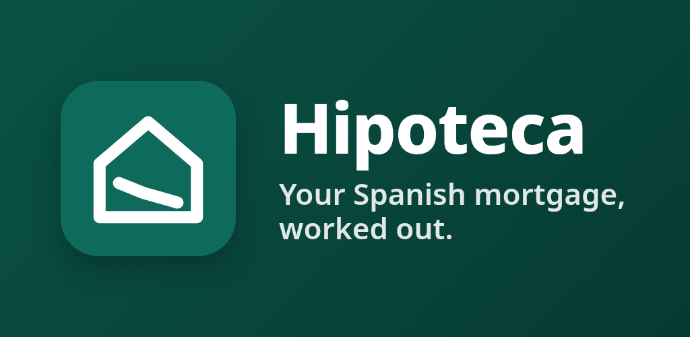
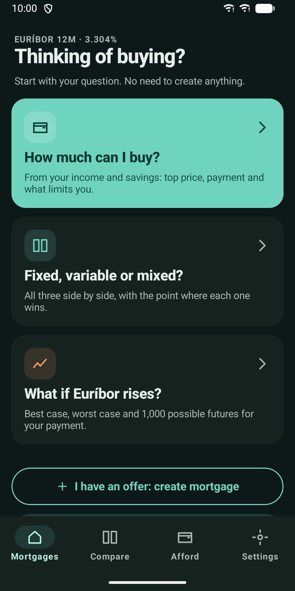
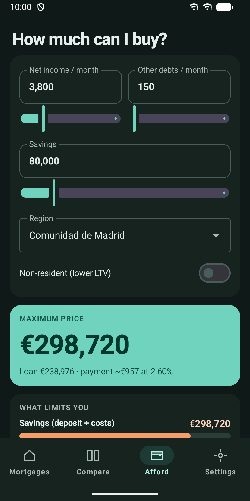
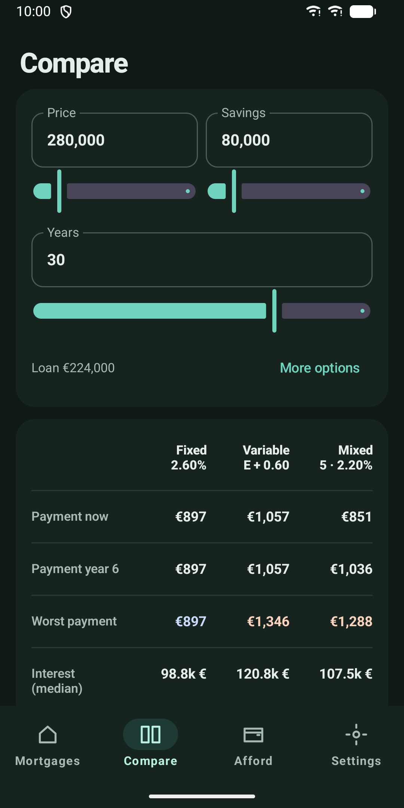
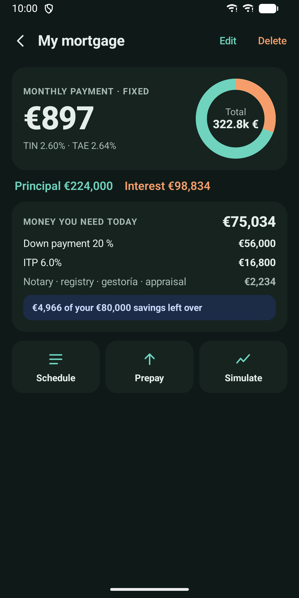
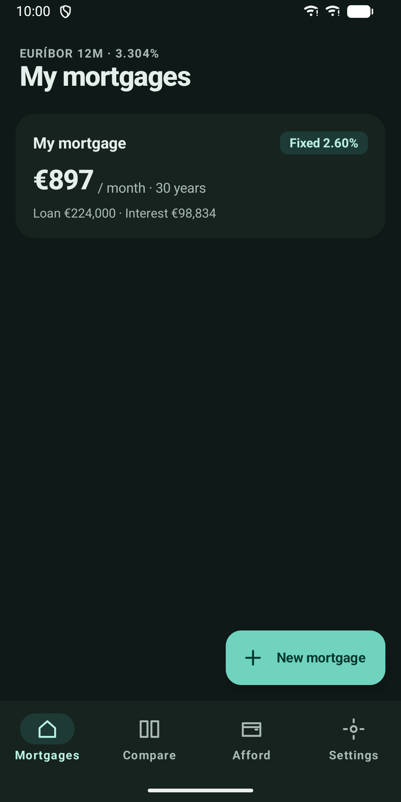
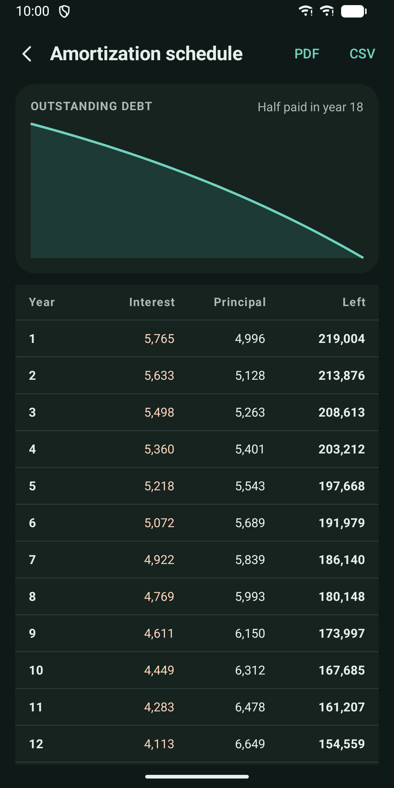
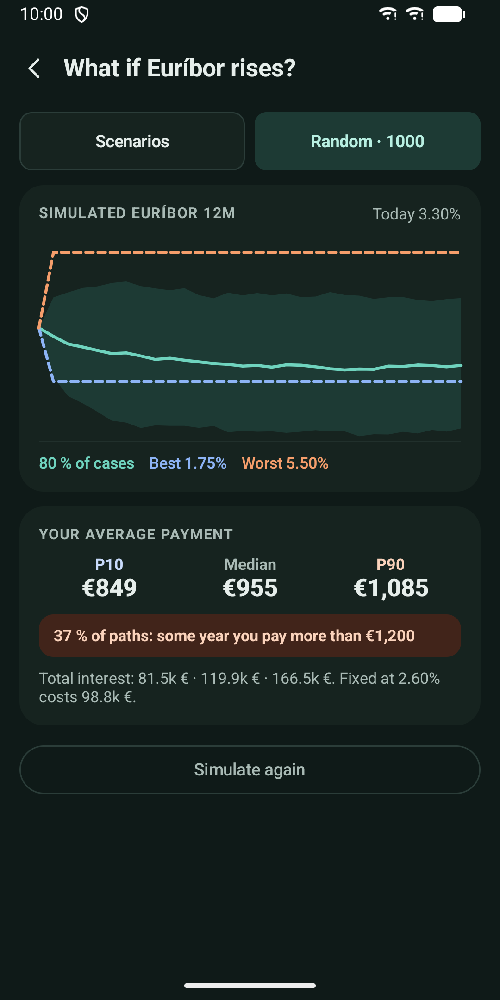
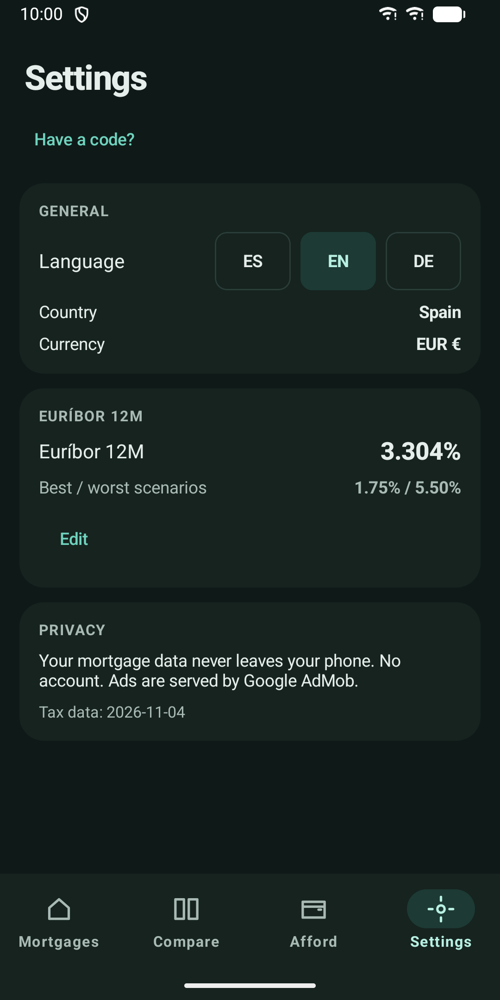

Hipoteca: Mortgage Calculator
Plan, compare and track a Spanish mortgage: costs, taxes and Euríbor risk.









About
Hipoteca helps you decide on and follow a home mortgage in Spain. Start with a plain question, see the real numbers, and keep track of the loan you already pay. HOW MUCH CAN I BUY? Enter your net monthly income, other debts, savings, region and residency. The app shows the highest price you can reach, the loan and the monthly payment, and tells you whether your savings or your income is what limits you. FIXED, VARIABLE OR MIXED? See a fixed, a variable and a mixed offer side by side: payment now, payment in year 6, worst-case payment, median total interest, and the Euríbor level at which variable stops beating fixed. WHAT A LOAN REALLY COSTS Save your own offers with price, savings, region, new build or resale, term, rate type, age and residency. The result shows the monthly payment, TIN and TAE, principal versus interest, and the money you need on day one: down payment, ITP or IVA plus AJD, notary, registry, gestoría and appraisal. It also checks whether the linked products the bank asks for (salary, home insurance, life insurance) pay for themselves. PURCHASE TAXES BY REGION Tax rules for each Spanish region are built in, including young-buyer rates. Regions whose data has not yet been confirmed against two sources are clearly flagged. WHAT IF EURÍBOR RISES? Run best, base and worst Euríbor scenarios, or 1,000 random futures with a fan chart, payment ranges and the share of futures in which you would pay more than today. PAY OFF EARLY Try a one-off or yearly extra payment and compare shortening the term with lowering the payment, after the legal early-repayment fee. TRACK THE MORTGAGE YOU HAVE Enter when you signed, the amount, term and rate. See what you owe today, how much is paid, when it ends, what is still to pay, and the jump when a mixed loan turns variable. Enter your bank's balance to make it exact. A home screen widget shows what you owe, your payment and the end date. SCHEDULE AND EXPORT Yearly table and balance chart. Share the schedule as PDF or as CSV that opens correctly in Spanish spreadsheets. PRIVATE BY DESIGN No account and no sign-in. Your mortgage data stays on your phone. The app shows a small ad banner on some screens; a one-time purchase removes it. Good to know - Built for Spain only, in euros. - Euríbor is not downloaded. The app ships with a recent value you can change in Settings. - Available in English, Spanish and German. - Results are estimates and do not replace an offer or advice from your bank.